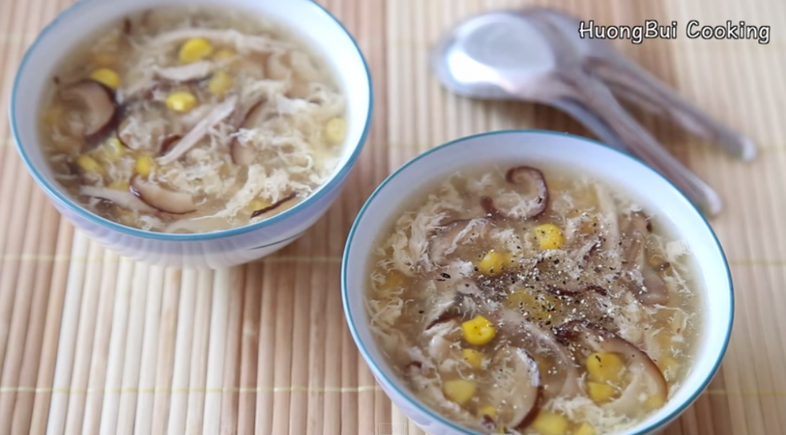

INGREDENTS
1 soup chicken (about 1.2kg)
20g shiitake mushroom
400g corn
4-6 tbsp tapioca/corn starch (for 2 liters soup)
2 eggs
1 onion peeled
some sliced ginger
ground black-pepper (optional)
Seasoning: fish sauce, salt, sugar, Knor (optional)
DIRECTIONS
● Step 1: add the chicken with generous amount of water in the pot with an onion and sliced ginger, bring to a boil, meanwhile don’t forget to skim off the foam rising on the surface. After that, let simmer until the chicken is cooked all the way through.
● Step 2: In the meantime, soak the mushroom in water so that they can get tender.
● Step 3: After the chicken is cooked, take it out and allow it to cool, then shred it roughly with your fingers.
● Step 4: The mushrooms are also soften, wash them carefully especially the edges, where lots of dust can stuck it. Then slice them into thin strips.
● Step 5: Now everything should be removed from the broth (both the onion and sliced ginger), add more boiling water into it and continue to cook at medium high.
Add in the mushrooms, the corn and the shredded chicken meat.
● Step 6: Beat the eggs until pale and fluffy, then slowly pour into the soup, meanwhile keep stirring around so that the eggs can get a light beautiful texture.
● Step 7: Add half a cup of water into the starch, stir until completely dissolved, then do the same as with the eggs before. The starch will help to thicken up the soup.
●Step 8: Last but not least, adjust the flavor to your taste with fish sauce, salt and chicken powder. And we’re done.
●You can actually create a recipe your own by adding other ingredients in the soup such as white aparagus, cauliflower, etc. Serve with some ground pepper to enhance the flavor.

⇒To get more instructions. Please watch the guide video behind